注记Work-in-progress 🚧
You are reading the work-in-progress first edition of Causal Inference in R. This chapter is mostly complete, but we might make small tweaks or copyedits.
Causal inference is not (just) a statistical problem · 原书逐章中译
来源：Malcolm Barrett、Lucy D’Agostino McGowan、Travis Gerke，Causal Inference in R · Causal inference is not (just) a statistical problem。 本页为中文翻译；原书代码块、公式、图表交叉引用和引用键均按原文保留。统计图在网页渲染时由 R 代码生成，静态插图直接引用原文件。 原书仓库采用 CC BY-NC-SA 4.0；代码采用 MIT 许可。请遵守原许可证并注明作者。
You are reading the work-in-progress first edition of Causal Inference in R. This chapter is mostly complete, but we might make small tweaks or copyedits.
我们现在已经具备了一些工具，可以进一步讨论本书前文提到过的问题：因果推断不（只是）一个统计问题。 当然，我们会使用统计学来回答因果问题。 统计学对于回答大多数问题都是必要的，即使在随机化设计中，统计方法往往也很基础。 然而，仅凭统计学无法处理因果推断的全部假设。
1973 年，Francis Anscombe 提出了一组由四个数据集组成的数据，称为 Anscombe 四元组。 这些数据说明了一个重要道理：仅凭汇总统计量无法帮助你理解数据；你还必须将数据可视化。 在 图 59.1 的图中，每个数据集的汇总统计量都极其相似，包括几乎完全相同的均值和相关系数。
library(quartets)
anscombe_quartet |>
ggplot(aes(x, y)) +
geom_point() +
geom_smooth(method = "lm", se = FALSE) +
facet_wrap(~dataset)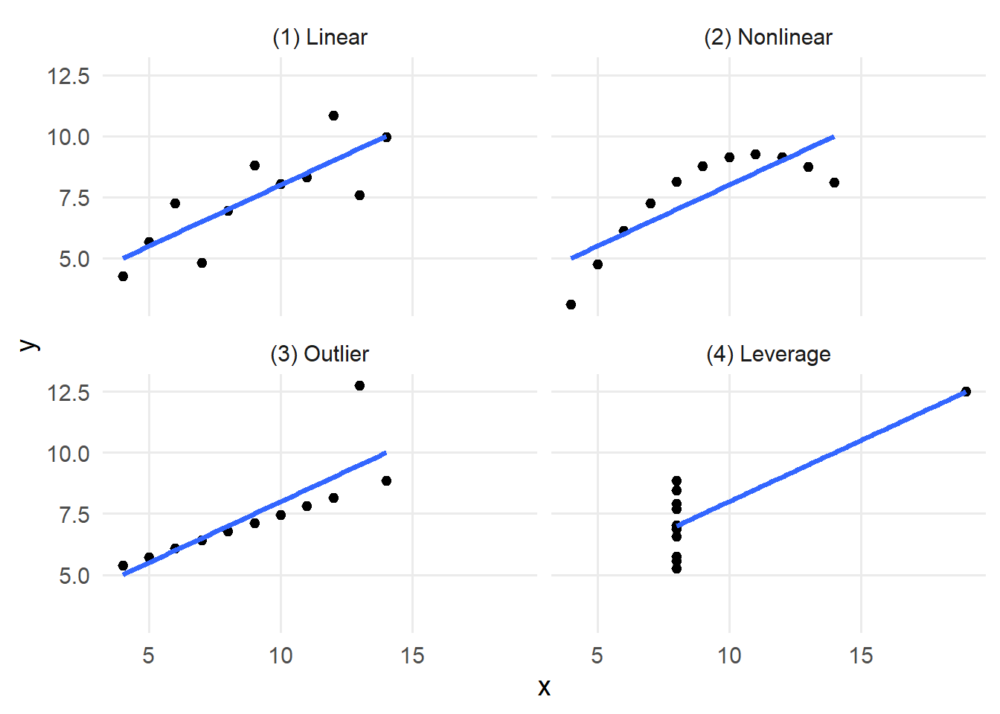
Datasaurus 十二组数据是 Anscombe 四元组的现代版本。 每个数据集的均值、标准差和相关系数几乎完全相同，但可视化结果却大不相同。
library(datasauRus)
# roughly the same correlation in each dataset
datasaurus_dozen |>
group_by(dataset) |>
summarize(cor = round(cor(x, y), 2))# A tibble: 13 x 2
dataset cor
<chr> <dbl>
1 away -0.06
2 bullseye -0.07
3 circle -0.07
4 dino -0.06
5 dots -0.06
6 h_lines -0.06
7 high_lines -0.07
8 slant_down -0.07
9 slant_up -0.07
10 star -0.06
11 v_lines -0.07
12 wide_lines -0.07
13 x_shape -0.07datasaurus_dozen |>
ggplot(aes(x, y)) +
geom_point() +
facet_wrap(~dataset)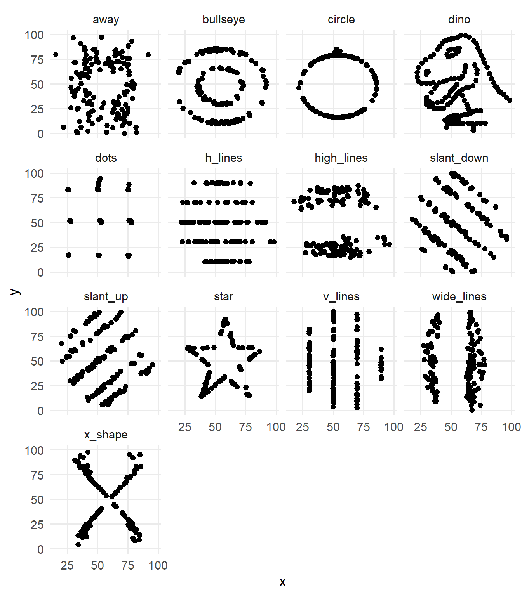
然而，在因果推断中，即使可视化也不足以理清因果效应。 正如我们在 潜在结局与反事实 和 用 DAG 表达因果问题 中看到的，要从相关性推断因果关系，需要基于背景知识作出无法验证的假设 (Robins 和 Wasserman 1999)。
受 Anscombe 四元组启发，因果四重奏具有与 Anscombe 四元组和 Datasaurus 十二组数据相同的许多性质：数据集中各变量的数值汇总结果相同 (D’Agostino McGowan, Gerke, 和 Barrett 2023)。 但与这些数据不同，因果四重奏中的图形彼此看起来也一样。 它们的区别在于生成每个数据集的因果结构。 图 59.3 展示了四个数据集，其中 exposure 与 outcome 之间的观察性关系几乎完全相同。
causal_quartet |>
# hide the dataset names
mutate(dataset = as.integer(factor(dataset))) |>
group_by(dataset) |>
mutate(exposure = scale(exposure), outcome = scale(outcome)) |>
ungroup() |>
ggplot(aes(exposure, outcome)) +
geom_point() +
geom_smooth(method = "lm", se = FALSE) +
facet_wrap(~dataset)对于每个数据集，我们都要回答是否应调整第三个变量 covariate。 covariate 是混杂因子吗？ 是中介变量吗？ 还是碰撞点？ 我们无法利用数据解决这个问题。 在 表 59.1 中，我们无法确定哪个效应是正确的。 同样，exposure 与 covariate 之间的相关性也没有帮助：它们在所有数据集中都相同！
library(gt)
effects <- causal_quartet |>
nest_by(dataset = as.integer(factor(dataset))) |>
mutate(
ate_x = coef(lm(outcome ~ exposure, data = data))[2],
ate_xz = coef(lm(outcome ~ exposure + covariate, data = data))[2],
cor = cor(data$exposure, data$covariate)
) |>
select(-data, dataset) |>
ungroup()
gt(effects) |>
fmt_number(columns = -dataset) |>
cols_label(
dataset = "Dataset",
ate_x = md("Not adjusting for `covariate`"),
ate_xz = md("Adjusting for `covariate`"),
cor = md("Correlation of `exposure` and `covariate`")
)exposure on outcome with and without adjustment for covariate. The unadjusted estimate is identical for all four datasets, as is the correlation between exposure and covariate. The adjusted estimate varies. Without background knowledge, it’s not clear which is right.
| Dataset | Not adjusting for covariate |
Adjusting for covariate |
Correlation of exposure and covariate |
|---|---|---|---|
| 1 | 1.00 | 0.55 | 0.70 |
| 2 | 1.00 | 0.50 | 0.70 |
| 3 | 1.00 | 0.00 | 0.70 |
| 4 | 1.00 | 0.88 | 0.70 |
10% 规则是流行病学及其他领域中用于判断某个变量是否为混杂因子的常见方法。 10% 规则认为，如果将某个变量纳入模型后使效应估计值改变超过 10%，就应将该变量纳入模型。 问题在于，这种方法并不奏效。 因果四重奏中的每个例子都会导致超过 10% 的变化。 正如我们所知，这会使某些数据集得到错误答案。 反过来，当变量造成的变化小于 10% 时将其排除，也可能带来问题，因为许多轻微的混杂效应会累积起来，造成更严重的偏倚。
effects |>
mutate(percent_change = scales::percent((ate_x - ate_xz) / ate_x)) |>
select(dataset, percent_change) |>
gt() |>
cols_label(
dataset = "Dataset",
percent_change = "Percent change"
)exposure when including covariate in the model.
| Dataset | Percent change |
|---|---|
| 1 | 44.6% |
| 2 | 49.7% |
| 3 | 99.8% |
| 4 | 12.5% |
虽然不同数据集中的 covariate 与 exposure 在图形上的关系并不完全相同，但它们的相关系数都相同。 在 图 59.4 中，两者的标准化关系完全一致。
causal_quartet |>
# hide the dataset names
mutate(dataset = as.integer(factor(dataset))) |>
group_by(dataset) |>
summarize(cor = round(cor(covariate, exposure), 2))# A tibble: 4 x 2
dataset cor
<int> <dbl>
1 1 0.7
2 2 0.7
3 3 0.7
4 4 0.7causal_quartet |>
# hide the dataset names
mutate(dataset = as.integer(factor(dataset))) |>
group_by(dataset) |>
mutate(covariate = scale(covariate), exposure = scale(exposure)) |>
ungroup() |>
ggplot(aes(covariate, exposure)) +
geom_point() +
geom_smooth(method = "lm", se = FALSE) +
facet_wrap(~dataset)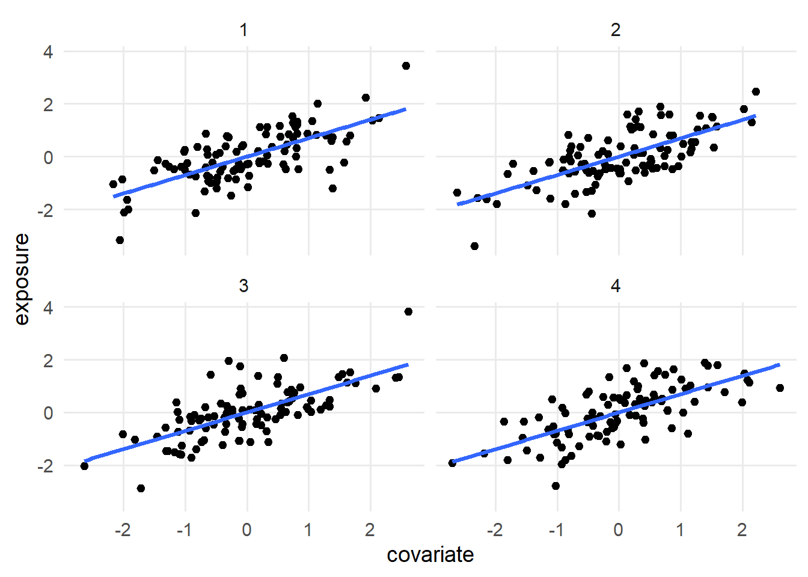
exposure and covariate. We still do not have enough information to determine whether covariate is a confounder, mediator, or collider.
将数值变量标准化为均值 0、标准差 1（如 scale() 所实现）是统计学中的常用方法。 标准化有多种用途，但在这里，我们选择对变量进行缩放，是为了强调每个数据集中 covariate 与 exposure 之间相同的相关性。 如果不对变量进行缩放，相关性仍然相同，但由于它们的标准差不同，图形看起来会有所差异。 OLS 模型中的 beta 系数是根据协方差和变量标准差计算的，因此缩放变量后，该系数就会与 Pearson 相关系数完全相同。
图 59.5 展示了 covariate 与 exposure 之间未经缩放的关系。 现在我们可以看到一些差异：数据集 4 中 covariate 的方差似乎更大，但这并不是可用于行动的信息。 事实上，这只是数据生成过程造成的数学假象。
causal_quartet |>
# hide the dataset names
mutate(dataset = as.integer(factor(dataset))) |>
ggplot(aes(covariate, exposure)) +
geom_point() +
geom_smooth(method = "lm", se = FALSE) +
facet_wrap(~dataset)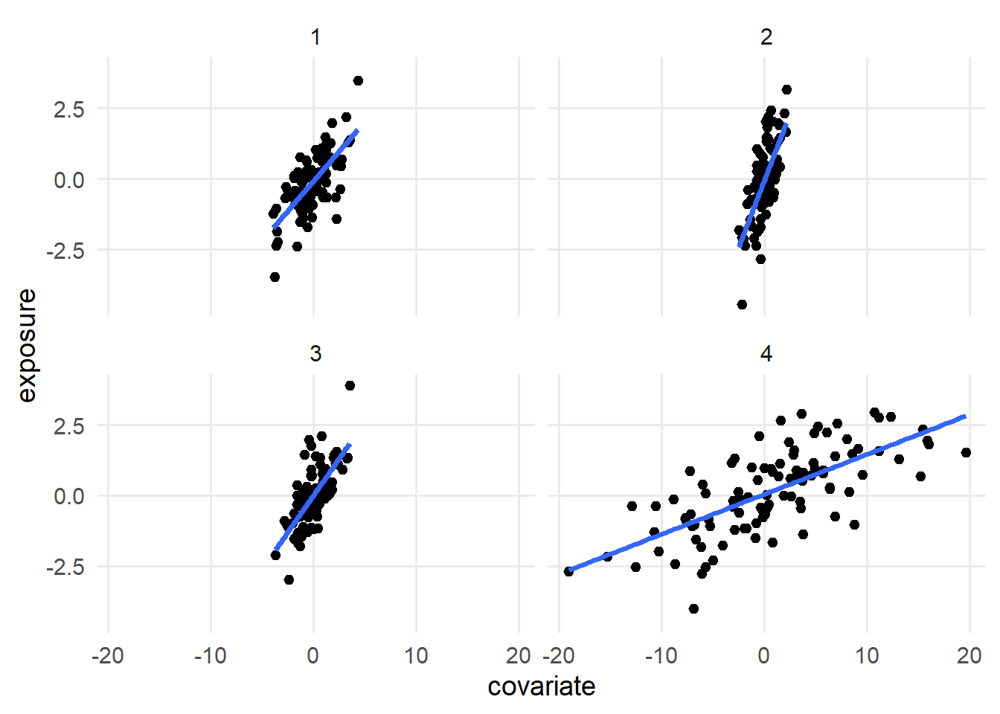
让我们揭示代表数据集因果结构的数据集标签。 在 图 59.6 中，covariate 在每个数据集中扮演着不同的角色。 在数据集 1 和 4 中，它是碰撞点（我们不应对其进行调整）。 在数据集 2 中，它是混杂因子（我们应对其进行调整）。 在数据集 3 中，它是中介变量（这取决于研究问题）。
causal_quartet |>
ggplot(aes(exposure, outcome)) +
geom_point() +
geom_smooth(method = "lm", se = FALSE) +
facet_wrap(~dataset)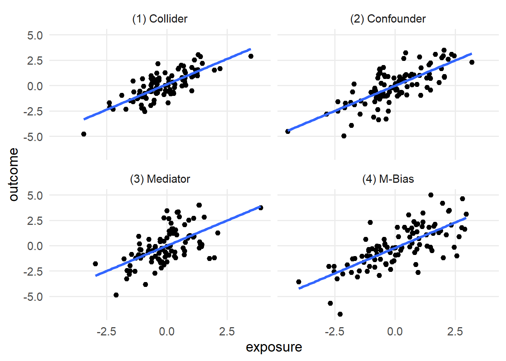
covariate. In the second dataset, covariate is a confounder, and we should control for it. In the third dataset, covariate is a mediator, and we should control for it if we want the direct effect, but not if we want the total effect.
如果数据无法区分这些因果结构，我们能做什么？ 最好的办法是充分了解数据生成机制。 在 图 59.7 中，我们展示了每个数据集对应的 DAG。 为每个数据集建立 DAG 后，只要 DAG 是正确的，我们就只需查询 DAG，即可得到正确的调整集。
library(ggdag)
d_coll <- quartet_collider(x = "e", y = "o", z = "c")
d_conf <- quartet_confounder(x = "e", y = "o", z = "c")
d_med <- quartet_mediator(x = "e", y = "o", z = "c")
d_mbias <- quartet_m_bias(x = "e", y = "o", z = "c", u1 = "u1", u2 = "u2")
p_coll <- d_coll |>
tidy_dagitty() |>
mutate(covariate = if_else(label == "c", "covariate", NA_character_)) |>
ggplot(
aes(x = x, y = y, xend = xend, yend = yend)
) +
geom_dag_point(aes(color = covariate)) +
geom_dag_edges(edge_color = "grey70") +
geom_dag_text(aes(label = label)) +
theme_dag() +
coord_cartesian(clip = "off") +
theme(legend.position = "bottom") +
ggtitle("(1) Collider") +
guides(
color = guide_legend(
title = NULL,
keywidth = unit(1.4, "mm"),
override.aes = list(size = 3.4, shape = 15)
)
) +
scale_color_discrete(breaks = "covariate", na.value = "grey70")
p_conf <- d_conf |>
tidy_dagitty() |>
mutate(covariate = if_else(label == "c", "covariate", NA_character_)) |>
ggplot(
aes(x = x, y = y, xend = xend, yend = yend)
) +
geom_dag_point(aes(color = covariate)) +
geom_dag_edges(edge_color = "grey70") +
geom_dag_text(aes(label = label)) +
theme_dag() +
coord_cartesian(clip = "off") +
theme(legend.position = "bottom") +
ggtitle("(2) Confounder") +
guides(
color = guide_legend(
title = NULL,
keywidth = unit(1.4, "mm"),
override.aes = list(size = 3.4, shape = 15)
)
) +
scale_color_discrete(breaks = "covariate", na.value = "grey70")
p_med <- d_med |>
tidy_dagitty() |>
mutate(covariate = if_else(label == "c", "covariate", NA_character_)) |>
ggplot(
aes(x = x, y = y, xend = xend, yend = yend)
) +
geom_dag_point(aes(color = covariate)) +
geom_dag_edges(edge_color = "grey70") +
geom_dag_text(aes(label = label)) +
theme_dag() +
coord_cartesian(clip = "off") +
theme(legend.position = "bottom") +
ggtitle("(3) Mediator") +
guides(
color = guide_legend(
title = NULL,
keywidth = unit(1.4, "mm"),
override.aes = list(size = 3.4, shape = 15)
)
) +
scale_color_discrete(breaks = "covariate", na.value = "grey70")
p_m_bias <- d_mbias |>
tidy_dagitty() |>
mutate(covariate = if_else(label == "c", "covariate", NA_character_)) |>
ggplot(
aes(x = x, y = y, xend = xend, yend = yend)
) +
geom_dag_point(aes(color = covariate)) +
geom_dag_edges(edge_color = "grey70") +
geom_dag_text(aes(label = label)) +
theme_dag() +
coord_cartesian(clip = "off") +
ggtitle("(4) M-bias") +
theme(legend.position = "bottom") +
guides(
color = guide_legend(
title = NULL,
keywidth = unit(1.4, "mm"),
override.aes = list(size = 3.4, shape = 15)
)
) +
scale_color_discrete(breaks = "covariate", na.value = "grey70")
p_coll
p_conf
p_med
p_m_bias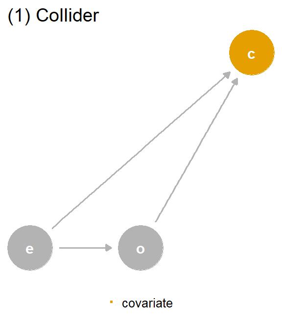
covariate (c) is a collider. We should not adjust for covariate, which is a descendant of exposure (e) and outcome (o).
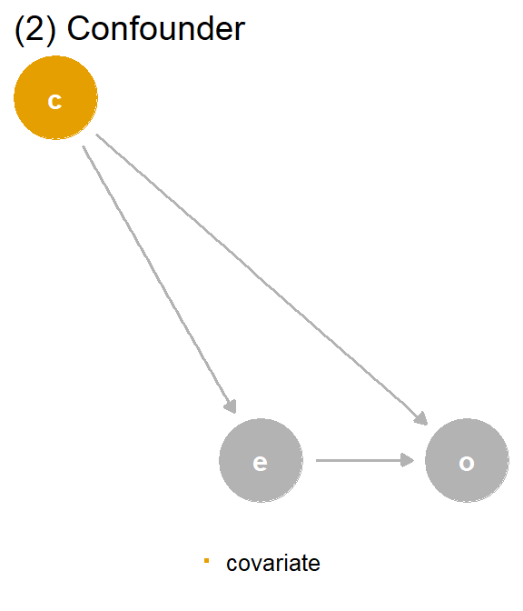
covariate (c) is a confounder. covariate is a mutual cause of exposure (e) and outcome (o), representing a backdoor path, so we must adjust for it to get the right answer.
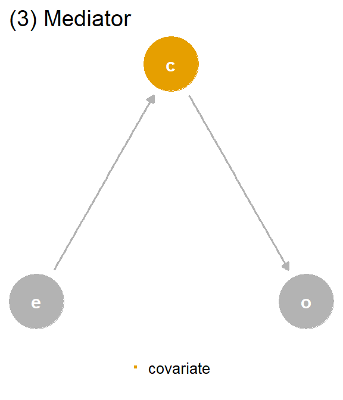
covariate (c) is a mediator. covariate is a descendant of exposure (e) and a cause of outcome (o). The path through covariate is the indirect path, and the path through exposure is the direct path. We should adjust for covariate if we want the direct effect, but not if we want the total effect.
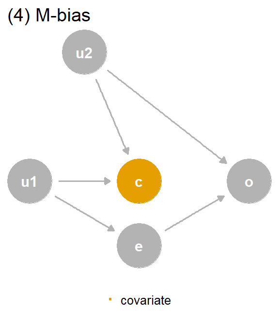
covariate (c) is a collider via M-Bias. Although covariate happens before both outcome (o) and exposure (e), it’s still a collider. We should not adjust for covariate, particularly since we can’t control for the bias via u1 and u2, which are unmeasured.
DAG 中的数据生成机制1与生成这些数据集的机制相匹配，因此我们可以使用 DAG 确定正确的效应：数据集 1 和 4 不进行调整，数据集 2 进行调整。 对于数据集 3，这取决于我们想要估计哪一种中介效应：直接效应需要调整，而总效应不需要调整。
| Data generating mechanism | Correct causal model | Correct causal effect |
|---|---|---|
| (1) Collider | outcome ~ exposure | 1 |
| (2) Confounder | outcome ~ exposure; covariate | 0.5 |
| (3) Mediator | Direct effect: outcome ~ exposure; covariate, Total Effect: outcome ~ exposure | Direct effect: 0, Total effect: 1 |
| (4) M-Bias | outcome ~ exposure | 1 |
希望我们已经让你相信了 DAG 的用途。 然而，构建正确的 DAG 是一项具有挑战性的工作。 在因果四重奏中，我们之所以知道 DAG，是因为数据由我们生成。 在现实生活中，我们需要利用背景知识来构建候选因果结构。 对于某些问题，我们没有这样的背景知识。 对于另一些问题，我们可能会担心因果结构过于复杂，尤其是在变量彼此相互演化时，例如 图 58.28 所示的情况。
当 DAG 不完整或存在不确定性时，有一个启发式依据尤其有用：时间。 由于因果关系具有时间性，原因必须先于结果发生。 判断是否应针对混杂因子进行调整时，许多（但不是全部）问题只需按照时间顺序排列变量即可解决。 时间顺序也是你可以在 DAG 中可视化的最重要假设之一，因此无论 DAG 是否完整，从时间顺序入手都是很好的选择。
考虑 图 59.8 (a)，这是碰撞点 DAG 的一个按时间排序版本，其中协变量在基线和随访时均被测量。 原始 DAG 实际上表示第二次测量，此时协变量是结局和暴露的后代。 然而，如果我们控制研究开始时测量的同一个协变量（图 59.8 (b)），那么在随访时它不可能是结局的后代，因为随访结局尚未发生。 因此，当你缺乏关于协变量因果结构的背景知识时，可以使用时间排序作为避免偏倚的防御措施。 只对发生在结局之前的变量进行控制。
d_coll <- quartet_time_collider(
x0 = "e0",
x1 = "e1",
x2 = "e2",
x3 = "e3",
y1 = "o1",
y2 = "o2",
y3 = "o3",
z1 = "c1",
z2 = "c2",
z3 = "c3"
)
d_coll |>
tidy_dagitty() |>
mutate(
covariate = if_else(label == "c3", "covariate\n(follow-up)", NA_character_)
) |>
ggplot(
aes(x = x, y = y, xend = xend, yend = yend)
) +
geom_dag_point(aes(color = covariate)) +
geom_dag_edges(edge_color = "grey70") +
geom_dag_text(aes(label = label)) +
theme_dag() +
coord_cartesian(clip = "off") +
theme(legend.position = "bottom") +
geom_vline(xintercept = c(2.6, 3.25, 3.6, 4.25), lty = 2, color = "grey60") +
annotate("label", x = 2.925, y = 0.97, label = "baseline", color = "grey50") +
annotate(
"label",
x = 3.925,
y = 0.97,
label = "follow-up",
color = "grey50"
) +
guides(
color = guide_legend(
title = NULL,
keywidth = unit(1.4, "mm"),
override.aes = list(size = 3.4, shape = 15)
)
) +
scale_color_discrete(breaks = "covariate\n(follow-up)", na.value = "grey70")
d_coll |>
tidy_dagitty() |>
mutate(
covariate = if_else(label == "c2", "covariate\n(baseline)", NA_character_)
) |>
ggplot(
aes(x = x, y = y, xend = xend, yend = yend)
) +
geom_dag_point(aes(color = covariate)) +
geom_dag_edges(edge_color = "grey70") +
geom_dag_text(aes(label = label)) +
theme_dag() +
coord_cartesian(clip = "off") +
theme(legend.position = "bottom") +
geom_vline(xintercept = c(2.6, 3.25, 3.6, 4.25), lty = 2, color = "grey60") +
annotate("label", x = 2.925, y = 0.97, label = "baseline", color = "grey50") +
annotate(
"label",
x = 3.925,
y = 0.97,
label = "follow-up",
color = "grey50"
) +
guides(
color = guide_legend(
title = NULL,
keywidth = unit(1.4, "mm"),
override.aes = list(size = 3.4, shape = 15)
)
) +
scale_color_discrete(breaks = "covariate\n(baseline)", na.value = "grey70")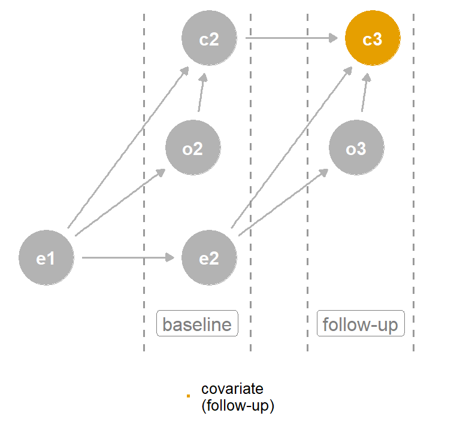
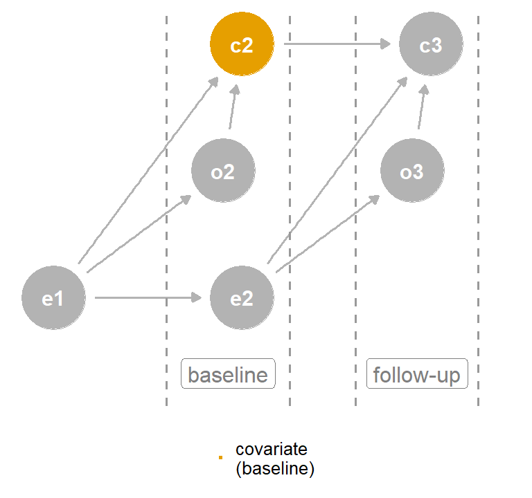
covariate at follow-up is a collider, but controlling for covariate at baseline is not.
时间排序这一启发式方法依赖于一个简单规则：不要针对未来进行调整。
quartet 包中的 causal_quartet_time 包含四个数据集各变量按时间排序的测量值。 每个变量都有一个 *_baseline 测量值和一个 *_follow-up 测量值。
causal_quartet_time# A tibble: 400 x 12
covariate_baseline exposure_baseline
<dbl> <dbl>
1 -0.0963 -1.43
2 -1.11 0.0593
3 0.647 0.370
4 0.755 0.00471
5 1.19 0.340
6 -0.588 -3.61
7 -1.13 1.44
8 0.689 1.02
9 -1.49 -2.43
10 -2.78 -1.26
# i 390 more rows
# i 10 more variables: outcome_baseline <dbl>,
# covariate_followup <dbl>, exposure_followup <dbl>,
# outcome_followup <dbl>, exposure_mid <dbl>,
# covariate_mid <dbl>, outcome_mid <dbl>, u1 <dbl>,
# u2 <dbl>, dataset <chr>使用公式 outcome_followup ~ exposure_baseline + covariate_baseline 可以适用于四个数据集中的三个。 尽管 covariate_baseline 只在第二个数据集的调整集中，但在另外两个数据集中它并不是碰撞点，因此不会造成问题。
causal_quartet_time |>
nest_by(dataset) |>
mutate(
adjusted_effect = coef(
lm(
outcome_followup ~ exposure_baseline + covariate_baseline,
data = data
)
)[2]
) |>
bind_cols(tibble(truth = c(1, 0.5, 1, 1))) |>
select(-data, dataset) |>
ungroup() |>
set_names(c("Dataset", "Adjusted effect", "Truth")) |>
gt() |>
fmt_number(columns = -Dataset)exposure_baseline on outcome_followup in each dataset. The effect adjusted for covariate_baseline is correct for three out of four datasets.
| Dataset | Adjusted effect | Truth |
|---|---|---|
| (1) Collider | 1.00 | 1.00 |
| (2) Confounder | 0.50 | 0.50 |
| (3) Mediator | 1.00 | 1.00 |
| (4) M-Bias | 0.88 | 1.00 |
它在数据集 4（M 偏倚示例）中失效。 在这种情况下，covariate_baseline 仍然是碰撞点，因为碰撞发生在暴露和结局之前。 不过，正如我们在 M-偏倚与蝴蝶偏倚 中讨论的，如果你不确定某个情况是否确实属于 M 偏倚，那么调整它通常比不调整更好。 混杂偏倚往往更严重，而有实际意义的 M 偏倚在现实生活中可能很少见。 当实际因果结构偏离完美的 M 偏倚时，偏倚的严重程度通常会降低。 因此，如果它明确属于 M 偏倚，就不要对该变量进行调整。 如果并不明确，就进行调整。
还要记住，在某些情况下，通过调整碰撞点可以阻断由此产生的偏倚，因为碰撞点偏倚只是另一条开放路径。 如果我们有 u1 和 u2，就可以在控制 covariate 的同时阻断潜在的碰撞点偏倚。 换句话说，有时我们打开一条路径后，还可以再次将其关闭。
预测性测量同样无法区分这四个数据集。 在 表 59.5 中，我们展示了将 covariate 加入模型后几个标准预测指标的变化。 在每个数据集中，covariate 都会为模型增加信息，因为它包含关于结局的关联性信息 2。 RMSE 下降，说明拟合更好；R2 上升，说明模型解释了更多方差。 covariate 的系数代表它所包含的关于 outcome 的信息；这些系数无法告诉我们这些信息在因果结构中来自何处。 相关不等于因果，预测也不等于因果。 对于碰撞点数据集，这甚至不是一个有用的预测工具，因为 covariate 发生在暴露和结局之后，所以在进行预测时你不会拥有它。
get_rmse <- function(data, model) {
sqrt(mean((data$outcome - predict(model, data))^2))
}
get_r_squared <- function(model) {
summary(model)$r.squared
}
causal_quartet |>
nest_by(dataset) |>
mutate(
rmse1 = get_rmse(
data,
lm(outcome ~ exposure, data = data)
),
rmse2 = get_rmse(
data,
lm(outcome ~ exposure + covariate, data = data)
),
rmse_diff = rmse2 - rmse1,
r_squared1 = get_r_squared(lm(outcome ~ exposure, data = data)),
r_squared2 = get_r_squared(lm(outcome ~ exposure + covariate, data = data)),
r_squared_diff = r_squared2 - r_squared1
) |>
select(dataset, rmse = rmse_diff, r_squared = r_squared_diff) |>
ungroup() |>
gt() |>
fmt_number() |>
cols_label(
dataset = "Dataset",
rmse = "RMSE",
r_squared = md("R^2^")
)outcome in each dataset with and without covariate. In each dataset, covariate adds information to the model, but this offers little guidance regarding the proper causal model.
| Dataset | RMSE | R2 |
|---|---|---|
| (1) Collider | −0.14 | 0.12 |
| (2) Confounder | −0.20 | 0.14 |
| (3) Mediator | −0.48 | 0.37 |
| (4) M-Bias | −0.01 | 0.01 |
同样，除了我们所关注原因对应的变量之外，其他变量的模型系数也可能难以解释。 在 outcome ~ exposure + covariate 模型中，人们很容易想同时报告 covariate 和 exposure 的系数。 问题在于，正如 为什么正确的因果模型不一定是最好的预测模型？ 中所讨论的，covariate 对 outcome 的效应，其因果结构可能不同于 exposure 对 outcome 的效应。 让我们考虑一个包含其他变量的因果四重奏 DAG 变体。
首先从混杂因子 DAG 开始。 在 图 59.9 中，我们看到 covariate 是一个混杂因子。 如果这个 DAG 表示 outcome 的完整因果结构，那么在满足建模过程的其他假设的前提下，模型 outcome ~ exposure + covariate 将给出 exposure 对 outcome 的无偏效应估计。 对于 covariate 对 outcome 的效应，其调整集为空；而且 exposure 不是碰撞点，因此控制它不会引入偏倚4。 但再仔细看一下。 对于 covariate 对 outcome 的效应，exposure 是一个中介变量；部分总效应通过 outcome 介导，同时 covariate 对 outcome 还存在直接效应。 两个估计值都是无偏的，但属于不同的估计类型。 exposure 对 outcome 的效应是这段关系的总效应，而 covariate 对 outcome 的效应是直接效应。
p_conf +
ggtitle(NULL)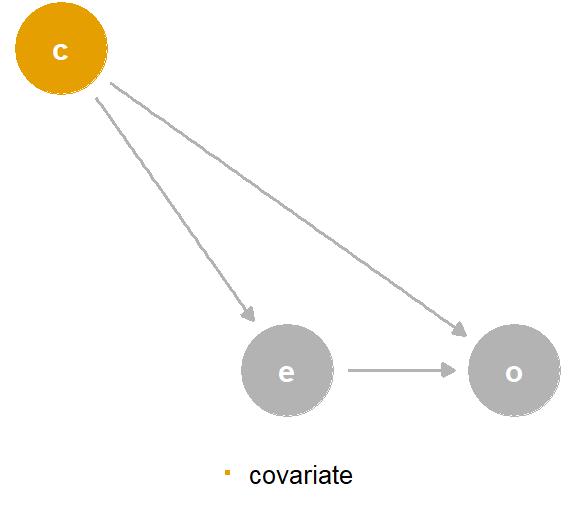
covariate is a confounder. If you look closely, you’ll realize that, from the perspective of the effect of covariate on the outcome, exposure is a mediator.
如果我们加入 q（covariate 和 outcome 的共同原因），会发生什么？ 在 图 59.10 中，调整集仍然不同。 对于 outcome ~ exposure，调整集仍然相同：{covariate}。 outcome ~ covariate 的调整集是 {q}。 换句话说，q 是 covariate 对 outcome 效应的混杂因子。 模型 outcome ~ exposure + covariate 会为 exposure 产生正确的效应，但无法得到 covariate 直接效应的正确估计。 现在我们面临这样的情况：covariate 不仅回答了与 exposure 不同类型的问题，而且由于缺少 q 而产生了偏倚。
coords <- list(
x = c(X = 1.75, Z = 1, Y = 3, Q = 0),
y = c(X = 1.1, Z = 1.5, Y = 1, Q = 1)
)
d_conf2 <- dagify(
X ~ Z,
Y ~ X + Z + Q,
Z ~ Q,
exposure = "X",
outcome = "Y",
labels = c(X = "e", Y = "o", Z = "c", Q = "q"),
coords = coords
)
p_conf2 <- d_conf2 |>
tidy_dagitty() |>
mutate(covariate = if_else(name == "Q", "covariate", NA_character_)) |>
ggplot(
aes(x = x, y = y, xend = xend, yend = yend)
) +
geom_dag_point(aes(color = covariate)) +
geom_dag_edges(edge_color = "grey70") +
geom_dag_text(aes(label = label)) +
theme_dag() +
coord_cartesian(clip = "off") +
theme(legend.position = "none") +
guides(
color = guide_legend(
title = NULL,
keywidth = unit(1.4, "mm"),
override.aes = list(size = 3.4, shape = 15)
)
) +
scale_color_discrete(breaks = "covariate", na.value = "grey70")
p_conf2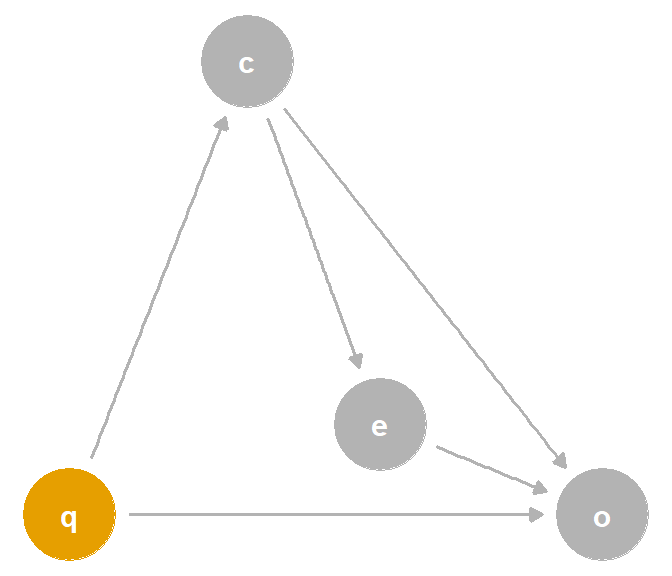
covariate is a confounder. Now, the relationship between covariate and outcome is confounded by q, a variable not necessary to calculate the unbiased effect of exposure on outcome.
指定一个单一的因果模型极具挑战性。 让一个模型回答多个因果问题则困难得多。 如果试图这样做，就要对这两个问题都进行同样严格的审查5。 是否存在一个能够回答这两个问题的单一调整集？ 如果不存在，请指定两个模型，或放弃其中一个问题。 如果存在，则必须确保估计值回答的是正确的问题。 我们还将在 ?sec-interaction 中讨论联合因果效应。
遗憾的是，用于检测多个暴露和效应类型的调整集的算法尚未得到充分发展，因此你可能需要依靠自己对因果结构的了解来确定这些调整集的交集。
关于生成这些数据集的模型，参见 D’Agostino McGowan, Gerke, 和 Barrett (2023)。↩︎
对于 M 偏倚，将 covariate 纳入模型的帮助程度取决于它包含多少关于 u2（结局的原因之一）的信息。 在本例中，数据生成机制使得 covariate 包含的 u1 信息多于 u2 信息，因此它提供的预测价值没有那么大。 u2 未能解释的部分大多由随机噪声代表。↩︎
如果你还记得，表二谬误得名于健康研究期刊中的一种倾向：在文章的第二张表中列出完整的模型系数。 关于表二谬误的详细讨论，参见 Westreich 和 Greenland (2013)。↩︎
此外，OLS 产生的是可合并效应。 其他效应，例如优势比和风险比，是不可合并的，这意味着即使不存在混杂，其条件优势比或风险比也可能不同于相应的边际版本。 我们将在 ?sec-non-collapse 中讨论不可合并性。↩︎
如果你还记得，随意进行因果推断的实践者会以这种方式从一个模型解读许多效应，但我们认为这是一种虚张声势的做法。↩︎